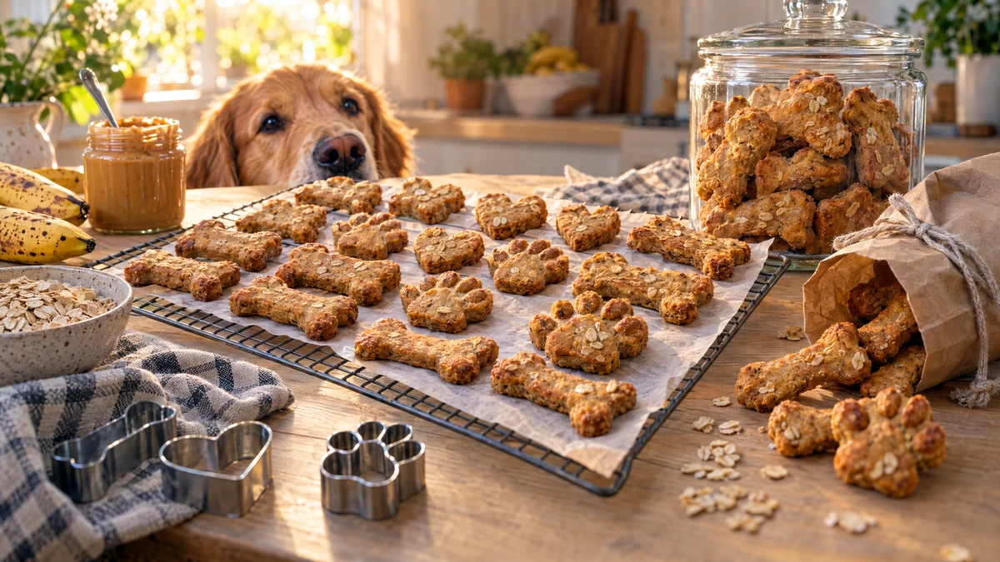

RESTFEST · HUSDJUR
Hundkex med jordnötssmör, havre och banan
En brunfläckig banan, en klick jordnötssmör och några nävar havre och mjöl blir en fast deg som stansas ut till små ben, hjärtan och tassar. Kexen gräddas gyllene och torkas hårda, så att de knastrar mellan tänderna och håller i veckor. Ser ut som från en hunddelikatessbutik, och hunden kommer att sitta fint utan att bli tillsagd.
- Förberedelse
- 20 min
- Tillagning
- 25 min + 1 tim torkning
- Räcker till
- ca 30 kex, beroende på storlek
- Nivå
- Nybörjare
Bra att veta. Djur tål inte allt vi tål. Använd aldrig choklad, russin eller vindruvor, lök, vitlök, avokado, macadamianötter, alkohol, koffein eller xylitol, ett sötningsmedel som finns i vissa jordnötssmör och sockerfria produkter. Använd inga eteriska oljor, de kan vara giftiga, särskilt för katter. Godis bör vara högst en tiondel av djurets dagliga mat. Fråga veterinären om ditt djur har allergier, övervikt eller en sjukdom.
 Det här behöver du
Det här behöver du
Tryck på + vid det du behöver köpa.
Gör så här
- Sätt ugnen på 175 grader. Klä en plåt med bakplåtspapper.
- Mosa bananen slät med en gaffel och rör ner jordnötssmöret och ägget.
- Tillsätt mjöl och havregryn och arbeta ihop till en fast deg. Tillsätt vatten en matsked i taget om den är för torr.
- Kavla ut degen ca ½ cm tjock mellan två bakplåtspapper och stansa ut kex med små formar, till exempel ben, hjärtan eller tassar. Anpassa storleken efter hunden.
- Lägg kexen på plåten och grädda i mitten av ugnen i 20–25 minuter, tills de är torra och gyllene.
- Stäng av ugnen och låt kexen torka kvar med luckan på glänt i en timme. Då blir de hårda och håller längre.
Presentation och användning
- Förvara kexen i en glasburk med lock, gärna med en tass eller ett ben ritat på etiketten.
- Fyll en papperspåse och knyt ett snöre runt, så blir de en fin present till en hundvän eller en ny valpägare.
- Ge 1–2 kex om dagen, färre till en liten hund.
- Kexen håller ca 2 veckor i en lufttät burk och kan frysas.
Bra att veta
- Kontrollera alltid att jordnötssmöret inte innehåller xylitol. Det är mycket giftigt för hundar.
- Har hunden spannmålsallergi, använd bara havremjöl och fråga veterinären.
- Kexen är gjorda för hundar. De skadar inte människor, men de är inte heller särskilt goda.